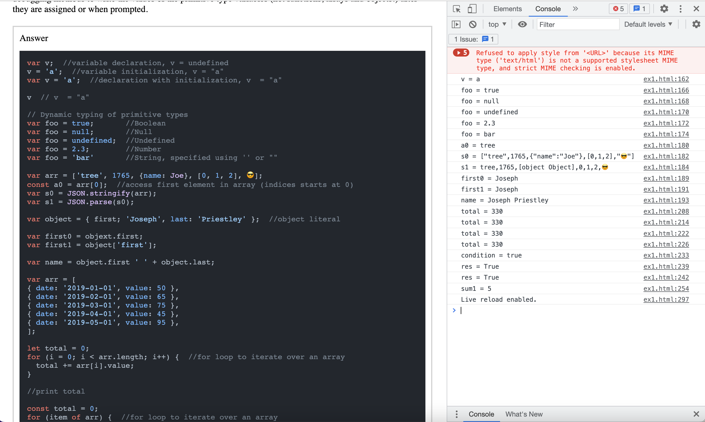
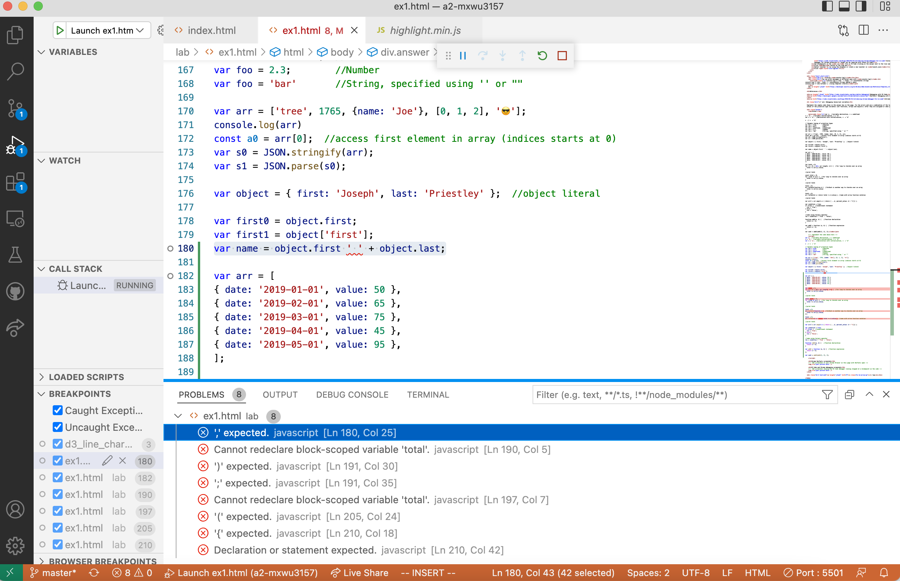
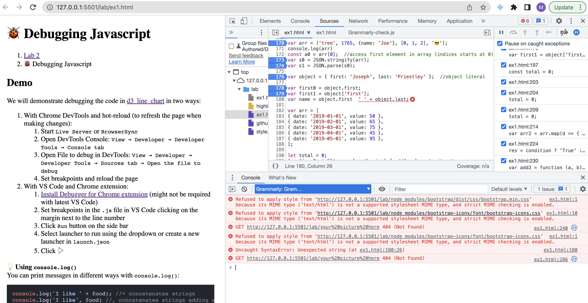

Answer
var v; //variable declaration, v = undefined
v = 'a'; //variable initialization, v = "a"
var v = 'a'; //declaration with initialization, v = "a"
v // v = "a"
console.log(`v = ${v}`);
// Dynamic typing of primitive types
var foo = true; //Boolean
console.log(`foo = ${foo}`);
var foo = null; //Null
console.log(`foo = ${foo}`);
var foo = undefined; //Undefined
console.log(`foo = ${foo}`);
var foo = 2.3; //Number
console.log(`foo = ${foo}`);
var foo = 'bar' //String, specified using '' or ""
console.log(`foo = ${foo}`);
var arr = ['tree', 1765, {name: 'Joe'}, [0, 1, 2], '😎'];
//console.log(`arr = ${arr}`);
const a0 = arr[0]; //access first element in array (indices starts at 0)
console.log(`a0 = ${a0}`);
var s0 = JSON.stringify(arr);
console.log(`s0 = ${s0}`);
var s1 = JSON.parse(s0);
console.log(`s1 = ${s1}`);
var object = { first: 'Joseph', last: 'Priestley' }; //object literal
//console.log(`object = ${object}`);
var first0 = object.first;
console.log(`first0 = ${first0}`);
var first1 = object['first'];
console.log(`first1 = ${first1}`);
var name = object.first + ' ' + object.last;
console.log(`name = ${name}`);
var arr = [
{ date: '2019-01-01', value: 50 },
{ date: '2019-02-01', value: 65 },
{ date: '2019-03-01', value: 75 },
{ date: '2019-04-01', value: 45 },
{ date: '2019-05-01', value: 95 },
];
//console.log(`arr = ${arr}`);
var total = 0;
for (i = 0; i < arr.length; i++) { //for loop to iterate over an array
total += arr[i].value;
}
console.log(`total = ${total}`);
total = 0;
for (const item of arr) { //for loop to iterate over an array
total += item.value;
}
console.log(`total = ${total}`);
//print tota
total = 0;
arr.forEach(function(d) { //forEach is another way to iterate over an array
total += d.value;
});
console.log(`total = ${total}`);
total = 0;
arr.forEach((d) => {return total += d.value;}); //same with arrow function notation
console.log(`total = ${total}`);
//print total
var arr2 = arr.map(d => { return { ...d, percent_value: d + '%'}} );
//console.log(`arr2 = ${arr2}`);
var condition = true;
console.log(`condition = ${condition}`);
if (true) { //conditional statement
res = 'True';
} else {
res = 'False';
}
console.log(`res = ${res}`);
//same using ternary operator
res = condition ? 'True' : 'False';
console.log(`res = ${res}`);
function add1(a, b) { //function declaration
return a + b;
}
var add2 = function (a, b) { //function expression
return a + b;
};
var sum1 = add2(add1(1, 2), 2);
console.log(`sum1 = ${sum1}`);
/code>
Chrome DevTools screenshot

VS Code and Chrome debugging screenshot

